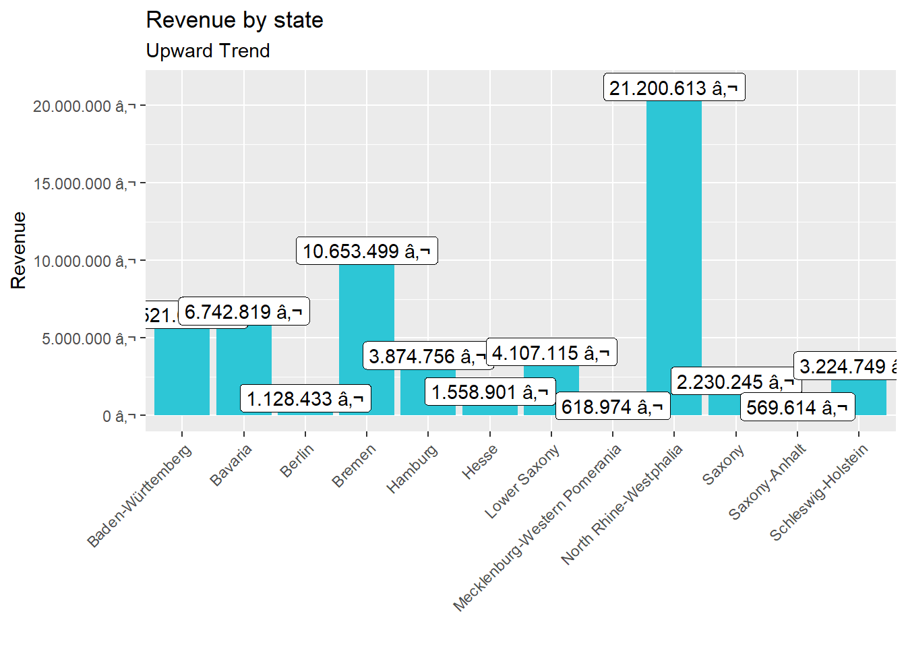
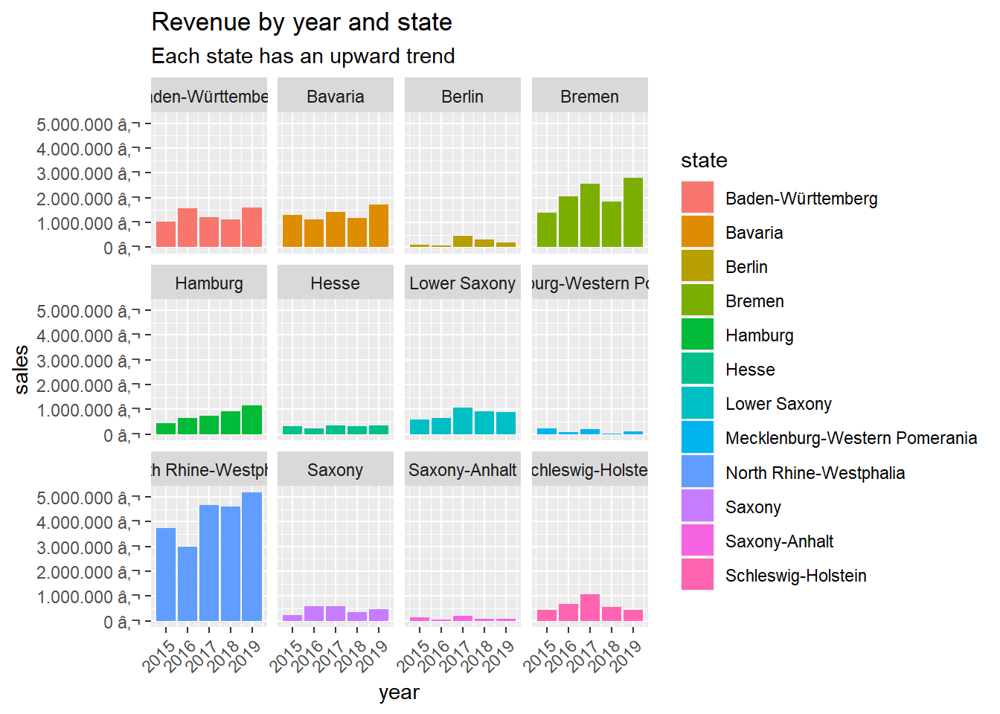
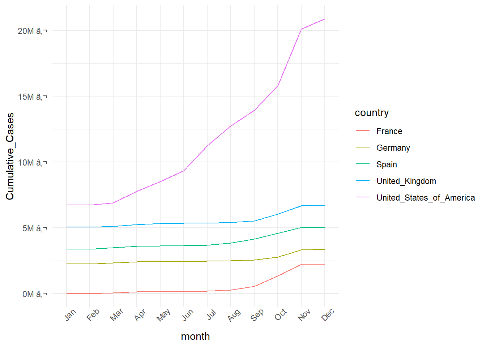
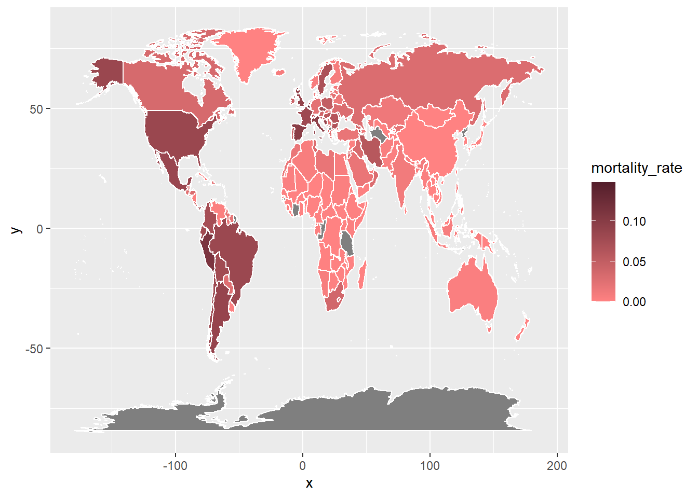

Into the tidyverse
Analyze the sales by location (state) with a bar plot. Since state and city are multiple features (variables), they should be split. Which state has the highes revenue? Replace your bike_orderlines_wrangled_tbl object with the newly wrangled object (with the columns state and city).
Analyze the sales by location and year (facet_wrap). Because there are 12 states with bike stores, you should get 12 plots.
# Data Science at TUHH ------------------------------------------------------
# SALES ANALYSIS ----
# 1.0 Load libraries ----
library(tidyverse)
library(readxl)
# 2.0 Importing Files ----
bikes_tbl <- read_excel("C:/Users/Khale/Desktop/Business Module/DS_101/00_data/01_bike_sales/01_raw_data/bikes.xlsx")
orderlines_tbl <- read_excel("C:/Users/Khale/Desktop/Business Module/DS_101/00_data/01_bike_sales/01_raw_data/orderlines.xlsx")
bikeshops_tbl <- read_excel("C:/Users/Khale/Desktop/Business Module/DS_101/00_data/01_bike_sales/01_raw_data/bikeshops.xlsx")
bikes_tbl <- read_excel("C:/Users/Khale/Desktop/Business Module/DS_101/00_data/01_bike_sales/01_raw_data/bikes.xlsx") %>%
# Separate product category name in main and sub
separate(col = category,
into = c("category.1", "category.2", "category.3"),
sep = " - ") %>%
# Renaming columns
set_names(names(.) %>% str_replace_all("\\.", "_"))
# 3.0 Examining Data ----
orderlines_tbl## # A tibble: 15,644 x 7
## ...1 order.id order.line order.date customer.id product.id quantity
## <chr> <dbl> <dbl> <dttm> <dbl> <dbl> <dbl>
## 1 1 1 1 2015-01-07 00:00:00 2 2681 1
## 2 2 1 2 2015-01-07 00:00:00 2 2411 1
## 3 3 2 1 2015-01-10 00:00:00 10 2629 1
## 4 4 2 2 2015-01-10 00:00:00 10 2137 1
## 5 5 3 1 2015-01-10 00:00:00 6 2367 1
## 6 6 3 2 2015-01-10 00:00:00 6 1973 1
## 7 7 3 3 2015-01-10 00:00:00 6 2422 1
## 8 8 3 4 2015-01-10 00:00:00 6 2655 1
## 9 9 3 5 2015-01-10 00:00:00 6 2247 1
## 10 10 4 1 2015-01-11 00:00:00 22 2408 1
## # ... with 15,634 more rowsglimpse(orderlines_tbl)## Rows: 15,644
## Columns: 7
## $ ...1 <chr> "1", "2", "3", "4", "5", "6", "7", "8", "9", "10", "11", "12", "13", "14"...
## $ order.id <dbl> 1, 1, 2, 2, 3, 3, 3, 3, 3, 4, 5, 5, 5, 5, 6, 6, 6, 6, 7, 7, 7, 7, 7, 7, 7...
## $ order.line <dbl> 1, 2, 1, 2, 1, 2, 3, 4, 5, 1, 1, 2, 3, 4, 1, 2, 3, 4, 1, 2, 3, 4, 5, 6, 7...
## $ order.date <dttm> 2015-01-07, 2015-01-07, 2015-01-10, 2015-01-10, 2015-01-10, 2015-01-10, ...
## $ customer.id <dbl> 2, 2, 10, 10, 6, 6, 6, 6, 6, 22, 8, 8, 8, 8, 16, 16, 16, 16, 9, 9, 9, 9, ...
## $ product.id <dbl> 2681, 2411, 2629, 2137, 2367, 1973, 2422, 2655, 2247, 2408, 2252, 2410, 2...
## $ quantity <dbl> 1, 1, 1, 1, 1, 1, 1, 1, 1, 1, 1, 2, 1, 1, 1, 1, 1, 1, 1, 1, 1, 1, 1, 1, 1...# 4.0 Joining Data ----
bike_orderlines_joined_tbl <- orderlines_tbl %>%
left_join(bikes_tbl, by = c("product.id" = "bike_id")) %>%
left_join(bikeshops_tbl, by = c("customer.id" = "bikeshop.id"))
bike_orderlines_joined_tbl %>% glimpse()## Rows: 15,644
## Columns: 21
## $ ...1 <chr> "1", "2", "3", "4", "5", "6", "7", "8", "9", "10", "11", "12", "13", "...
## $ order.id <dbl> 1, 1, 2, 2, 3, 3, 3, 3, 3, 4, 5, 5, 5, 5, 6, 6, 6, 6, 7, 7, 7, 7, 7, 7...
## $ order.line <dbl> 1, 2, 1, 2, 1, 2, 3, 4, 5, 1, 1, 2, 3, 4, 1, 2, 3, 4, 1, 2, 3, 4, 5, 6...
## $ order.date <dttm> 2015-01-07, 2015-01-07, 2015-01-10, 2015-01-10, 2015-01-10, 2015-01-1...
## $ customer.id <dbl> 2, 2, 10, 10, 6, 6, 6, 6, 6, 22, 8, 8, 8, 8, 16, 16, 16, 16, 9, 9, 9, ...
## $ product.id <dbl> 2681, 2411, 2629, 2137, 2367, 1973, 2422, 2655, 2247, 2408, 2252, 2410...
## $ quantity <dbl> 1, 1, 1, 1, 1, 1, 1, 1, 1, 1, 1, 2, 1, 1, 1, 1, 1, 1, 1, 1, 1, 1, 1, 1...
## $ model <chr> "Spectral CF 7 WMN", "Ultimate CF SLX Disc 8.0 ETAP", "Neuron CF 8", "...
## $ model_year <dbl> 2021, 2020, 2021, 2019, 2020, 2020, 2020, 2021, 2020, 2020, 2020, 2020...
## $ frame_material <chr> "carbon", "carbon", "carbon", "carbon", "aluminium", "carbon", "carbon...
## $ weight <dbl> 13.80, 7.44, 14.06, 8.80, 11.50, 8.80, 8.20, 8.85, 14.40, 6.50, 21.25,...
## $ price <dbl> 3119, 5359, 2729, 1749, 1219, 1359, 2529, 1559, 3899, 6629, 2919, 4089...
## $ category_1 <chr> "Mountain", "Road", "Mountain", "Road", "Mountain", "Hybrid / City", "...
## $ category_2 <chr> "Trail", "Race", "Trail", "Triathlon Bike", "Dirt Jump", "City", "Tria...
## $ category_3 <chr> "Spectral", "Ultimate", "Neuron", "Speedmax", "Stitched", "Roadlite", ...
## $ gender <chr> "female", "unisex", "unisex", "unisex", "unisex", "unisex", "female", ...
## $ url <chr> "https://www.canyon.com/en-de/mountain-bikes/trail-bikes/spectral/spec...
## $ name <chr> "AlexandeRad", "AlexandeRad", "WITT-RAD", "WITT-RAD", "fahrschneller",...
## $ location <chr> "Hamburg, Hamburg", "Hamburg, Hamburg", "Bremen, Bremen", "Bremen, Bre...
## $ lat <dbl> 53.57532, 53.57532, 53.07379, 53.07379, 48.78234, 48.78234, 48.78234, ...
## $ lng <dbl> 10.015340, 10.015340, 8.826754, 8.826754, 9.180819, 9.180819, 9.180819...bike_orderlines_joined_tbl## # A tibble: 15,644 x 21
## ...1 order.id order.line order.date customer.id product.id quantity model model_year
## <chr> <dbl> <dbl> <dttm> <dbl> <dbl> <dbl> <chr> <dbl>
## 1 1 1 1 2015-01-07 00:00:00 2 2681 1 Spec~ 2021
## 2 2 1 2 2015-01-07 00:00:00 2 2411 1 Ulti~ 2020
## 3 3 2 1 2015-01-10 00:00:00 10 2629 1 Neur~ 2021
## 4 4 2 2 2015-01-10 00:00:00 10 2137 1 Spee~ 2019
## 5 5 3 1 2015-01-10 00:00:00 6 2367 1 Stit~ 2020
## 6 6 3 2 2015-01-10 00:00:00 6 1973 1 Road~ 2020
## 7 7 3 3 2015-01-10 00:00:00 6 2422 1 Spee~ 2020
## 8 8 3 4 2015-01-10 00:00:00 6 2655 1 Infl~ 2021
## 9 9 3 5 2015-01-10 00:00:00 6 2247 1 Torq~ 2020
## 10 10 4 1 2015-01-11 00:00:00 22 2408 1 Ulti~ 2020
## # ... with 15,634 more rows, and 12 more variables: frame_material <chr>, weight <dbl>,
## # price <dbl>, category_1 <chr>, category_2 <chr>, category_3 <chr>, gender <chr>, url <chr>,
## # name <chr>, location <chr>, lat <dbl>, lng <dbl># 5.0 Wrangling Data ----
bike_orderlines_wrangled_tbl <- bike_orderlines_joined_tbl %>%
separate(col = location,
into = c("city", "state"),
sep = ", ") %>%
mutate(total.price = price * quantity) %>%
bind_cols(bike_orderlines_joined_tbl %>% select(order.id)) %>%
rename(bikeshop = name) %>%
set_names(names(.) %>% str_replace_all("\\.", "_"))
# 6.0 Business Insights ----
library(lubridate)
# 6.1 Sales by State ----
sales_by_state_tbl <- bike_orderlines_wrangled_tbl %>%
select(state, total_price) %>%
group_by(state) %>%
summarize(sales = sum(total_price)) %>%
mutate(sales_text = scales::dollar(sales, big.mark = ".",
decimal.mark = ",",
prefix = "",
suffix = " €"))
sales_by_state_tbl## # A tibble: 12 x 3
## state sales sales_text
## <chr> <dbl> <chr>
## 1 Baden-Württemberg 6521090 6.521.090 €
## 2 Bavaria 6742819 6.742.819 €
## 3 Berlin 1128433 1.128.433 €
## 4 Bremen 10653499 10.653.499 €
## 5 Hamburg 3874756 3.874.756 €
## 6 Hesse 1558901 1.558.901 €
## 7 Lower Saxony 4107115 4.107.115 €
## 8 Mecklenburg-Western Pomerania 618974 618.974 €
## 9 North Rhine-Westphalia 21200613 21.200.613 €
## 10 Saxony 2230245 2.230.245 €
## 11 Saxony-Anhalt 569614 569.614 €
## 12 Schleswig-Holstein 3224749 3.224.749 €sales_by_state_tbl %>%
# Step 2 - Visualize
ggplot(aes(x = state, y = sales)) +
geom_col(fill = "#2DC6D6") +
geom_label(aes(label = sales_text)) +
geom_smooth(method = "lm", se = FALSE) +
scale_y_continuous(labels = scales::dollar_format(big.mark = ".",
decimal.mark = ",",
prefix = "",
suffix = " €")) +
labs(
title = "Revenue by state",
subtitle = "Upward Trend",
x = "",
y = "Revenue"
)+ theme(axis.text.x = element_text(angle = 45, hjust = 1))
# 6.2 Sales by Year and State ----
# Step 1 - Manipulate
sales_by_year_loc_1_tbl <- bike_orderlines_wrangled_tbl %>%
select(state,order_date,total_price) %>%
mutate(year = year(order_date)) %>%
group_by(year, state) %>%
summarise(sales = sum(total_price)) %>%
ungroup() %>%
mutate(sales_text = scales::dollar(sales, big.mark = ".",
decimal.mark = ",",
prefix = "",
suffix = " €"))
sales_by_year_loc_1_tbl ## # A tibble: 60 x 4
## year state sales sales_text
## <dbl> <chr> <dbl> <chr>
## 1 2015 Baden-Württemberg 1031924 1.031.924 €
## 2 2015 Bavaria 1301461 1.301.461 €
## 3 2015 Berlin 95853 95.853 €
## 4 2015 Bremen 1395912 1.395.912 €
## 5 2015 Hamburg 423090 423.090 €
## 6 2015 Hesse 308609 308.609 €
## 7 2015 Lower Saxony 584386 584.386 €
## 8 2015 Mecklenburg-Western Pomerania 222003 222.003 €
## 9 2015 North Rhine-Westphalia 3735092 3.735.092 €
## 10 2015 Saxony 238371 238.371 €
## # ... with 50 more rows# Step 2 - Visualize
sales_by_year_loc_1_tbl %>%
ggplot(aes(x = year, y = sales, fill = state)) +
geom_col() +
facet_wrap(~ state) +
scale_y_continuous(labels = scales::dollar_format(big.mark = ".",
decimal.mark = ",",
prefix = "",
suffix = " €")) +
labs(
title = "Revenue by year and state",
subtitle = "Each state has an upward trend",
fill = "state"
) +
theme(axis.text.x = element_text(angle = 45, hjust = 1))
Data Acquisition
Get some data via an API. There are millions of providers, that offer API access for free and have good documentation about how to query their service. You just have to google them. You can use whatever service you want. For example, you can get data about your listening history (spotify), get data about flights (skyscanner) or just check the weather forecast.
library(httr)
library(tidyverse)
library(jsonlite)
resp <- GET("https://www.breakingbadapi.com/api/episodes")
# Wrapped into a function
sw_api <- function(episodeUrl) {
resp <- httr::GET(episodeUrl)
httr::stop_for_status(resp) # automatically throws an error if a request did not succeed
}
resp <- sw_api("https://www.breakingbadapi.com/api/episodes")
resp## Response [https://www.breakingbadapi.com/api/episodes]
## Date: 2020-12-04 20:20
## Status: 200
## Content-Type: application/json; charset=utf-8
## Size: 25.6 kBrawToChar(resp$content)## [1] "[{\"episode_id\":1,\"title\":\"Pilot\",\"season\":\"1\",\"air_date\":\"01-20-2008\",\"characters\":[\"Walter White\",\"Jesse Pinkman\",\"Skyler White\",\"Hank Schrader\",\"Marie Schrader\",\"Walter White Jr.\",\"Krazy-8\",\"Bogdan Wolynetz\"],\"episode\":\"1\",\"series\":\"Breaking Bad\"},{\"episode_id\":2,\"title\":\"Cat's in the Bag...\",\"season\":\"1\",\"air_date\":\"01-27-2008\",\"characters\":[\"Walter White\",\"Jesse Pinkman\",\"Skyler White\",\"Walter White Jr.\",\"Krazy-8\"],\"episode\":\"2\",\"series\":\"Breaking Bad\"},{\"episode_id\":3,\"title\":\"...And the Bag's in the River\",\"season\":\"1\",\"air_date\":\"02-10-2008\",\"characters\":[\"Walter White\",\"Jesse Pinkman\",\"Skyler White\",\"Hank Schrader\",\"Marie Schrader\",\"Walter White Jr.\",\"Krazy-8\",\"Gretchen Schwartz\"],\"episode\":\"3\",\"series\":\"Breaking Bad\"},{\"episode_id\":4,\"title\":\"Cancer Man\",\"season\":\"1\",\"air_date\":\"02-17-2008\",\"characters\":[\"Walter White\",\"Jesse Pinkman\",\"Skyler White\",\"Hank Schrader\",\"Marie Schrader\",\"Walter White Jr.\",\"Ken Wins\"],\"episode\":\"4\",\"series\":\"Breaking Bad\"},{\"episode_id\":5,\"title\":\"Gray Matter\",\"season\":\"1\",\"air_date\":\"02-24-2008\",\"characters\":[\"Walter White\",\"Jesse Pinkman\",\"Skyler White\",\"Hank Schrader\",\"Marie Schrader\",\"Walter White Jr.\",\"Elliott Schwarts\",\"Gretchen Swartz\",\"Badger\"],\"episode\":\"5\",\"series\":\"Breaking Bad\"},{\"episode_id\":6,\"title\":\"Crazy Handful of Nothin\",\"season\":\"1\",\"air_date\":\"03-02-2008\",\"characters\":[\"Walter White\",\"Jesse Pinkman\",\"Skyler White\",\"Hank Schrader\",\"Marie Schrader\",\"Walter White Jr.\",\"Tuco Salamanca\"],\"episode\":\"6\",\"series\":\"Breaking Bad\"},{\"episode_id\":7,\"title\":\"A No-Rough-Stuff-Type Deal\",\"season\":\" 1\",\"air_date\":\"03-09-2008\",\"characters\":[\"Walter White\",\"Jesse Pinkman\",\"Skyler White\",\"Hank Schrader\",\"Marie Schrader\",\"Walter White Jr.\",\"Tuco Salamanca\"],\"episode\":\"7\",\"series\":\"Breaking Bad\"},{\"episode_id\":8,\"title\":\"Seven-Thirty-Seven\",\"season\":\"2\",\"air_date\":\"03-08-2009\",\"characters\":[\"Walter White\",\"Jesse Pinkman\",\"Skyler White\",\"Hank Schrader\",\"Marie Schrader\",\"Walter White Jr.\",\"Tuco Salamanca\"],\"episode\":\"1\",\"series\":\"Breaking Bad\"},{\"episode_id\":9,\"title\":\"Grilled\",\"season\":\"2\",\"air_date\":\"03-15-2009\",\"characters\":[\"Walter White\",\"Jesse Pinkman\",\"Skyler White\",\"Hank Schrader\",\"Marie Schrader\",\"Walter White Jr.\",\"Tuco Salamanca\",\"Hector Salamanca\"],\"episode\":\"2\",\"series\":\"Breaking Bad\"},{\"episode_id\":10,\"title\":\"Bit by a Dead Bee\",\"season\":\"2\",\"air_date\":\"03-22-2009\",\"characters\":[\"Walter White\",\"Jesse Pinkman\",\"Skyler White\",\"Hank Schrader\",\"Marie Schrader\",\"Walter White Jr.\",\"Hector Salamanca\"],\"episode\":\"3\",\"series\":\"Breaking Bad\"},{\"episode_id\":11,\"title\":\"Down\",\"season\":\"2\",\"air_date\":\"03-29-2009\",\"characters\":[\"Walter White\",\"Jesse Pinkman\",\"Skyler White\",\"Walter White Jr.\"],\"episode\":\"4\",\"series\":\"Breaking Bad\"},{\"episode_id\":12,\"title\":\"Breakage\",\"season\":\"2\",\"air_date\":\"04-05-2009\",\"characters\":[\"Walter White\",\"Jesse Pinkman\",\"Skyler White\",\"Hank Schrader\",\"Marie Schrader\",\"Walter White Jr.\",\"Jane Margolis\",\"Badger\"],\"episode\":\"5\",\"series\":\"Breaking Bad\"},{\"episode_id\":13,\"title\":\"Peekaboo\",\"season\":\"2\",\"air_date\":\"04-12-2009\",\"characters\":[\"Walter White\",\"Jesse Pinkman\",\"Skyler White\",\"Marie Schrader\",\"Walter White Jr.\",\"Gretchen Schwartz\"],\"episode\":\"6\",\"series\":\"Breaking Bad\"},{\"episode_id\":14,\"title\":\"Negro y Azul\",\"season\":\"2\",\"air_date\":\"04-19-2009\",\"characters\":[\"Walter White\",\"Jesse Pinkman\",\"Skyler White\",\"Hank Schrader\",\"Marie Schrader\",\"Walter White Jr.\",\"Tortuga\",\"Jane Margolis\",\"Ted Beneke\"],\"episode\":\"7\",\"series\":\"Breaking Bad\"},{\"episode_id\":15,\"title\":\"Better Call Saul\",\"season\":\"2\",\"air_date\":\"04-26-2009\",\"characters\":[\"Walter White\",\"Jesse Pinkman\",\"Skyler White\",\"Hank Schrader\",\"Marie Schrader\",\"Saul Goodman\",\"Jane Margolis\",\"Badger\"],\"episode\":\"8\",\"series\":\"Breaking Bad\"},{\"episode_id\":16,\"title\":\"4 Days Out\",\"season\":\"2\",\"air_date\":\"05-03-2009\",\"characters\":[\"Walter White\",\"Jesse Pinkman\",\"Skyler White\",\"Hank Schrader\",\"Marie Schrader\",\"Walter White Jr.\",\"Saul Goodman\",\"Jane Margolis\"],\"episode\":\"9\",\"series\":\"Breaking Bad\"},{\"episode_id\":17,\"title\":\"Over\",\"season\":\"2\",\"air_date\":\"05-10-2009\",\"characters\":[\"Walter White\",\"Jesse Pinkman\",\"Skyler White\",\"Hank Schrader\",\"Marie Schrader\",\"Walter White Jr.\",\"Jane Margolis\",\"Ted Beneke\"],\"episode\":\"10\",\"series\":\"Breaking Bad\"},{\"episode_id\":18,\"title\":\"Mandala\",\"season\":\"2\",\"air_date\":\"05-17-2009\",\"characters\":[\"Walter White\",\"Jesse Pinkman\",\"Skyler White\",\"Saul Goodman\",\"Gustavo Fring\",\"Jane Margolis\",\"Ted Beneke\",\"Donald Margolis\",\"Combo\"],\"episode\":\"11\",\"series\":\"Breaking Bad\"},{\"episode_id\":19,\"title\":\"Phoenix\",\"season\":\"2\",\"air_date\":\"05-24-2009\",\"characters\":[\"Walter White\",\"Jesse Pinkman\",\"Skyler White\",\"Hank Schrader\",\"Marie Schrader\",\"Walter White Jr.\",\"Saul Goodman\",\"Jane Margolis\",\"Ted Beneke\",\"Donald Margolis\"],\"episode\":\"12\",\"series\":\"Breaking Bad\"},{\"episode_id\":20,\"title\":\"ABQ\",\"season\":\"2\",\"air_date\":\"05-31-2009\",\"characters\":[\"Walter White\",\"Jesse Pinkman\",\"Skyler White\",\"Hank Schrader\",\"Marie Schrader\",\"Walter White Jr.\",\"Mike Ehrmantraut\",\"Gustavo Fring\",\"Jane Margolis\",\"Donald Margolis\"],\"episode\":\"13\",\"series\":\"Breaking Bad\"},{\"episode_id\":21,\"title\":\"No Más\",\"season\":\"3\",\"air_date\":\"03-21-2010\",\"characters\":[\"Walter White\",\"Jesse Pinkman\",\"Skyler White\",\"Hank Schrader\",\"Marie Schrader\",\"Walter White Jr.\",\"Gustavo Fring\",\"The cousins\"],\"episode\":\"1\",\"series\":\"Breaking Bad\"},{\"episode_id\":22,\"title\":\"Caballo sin Nombre\",\"season\":\"3\",\"air_date\":\"03-28-2010\",\"characters\":[\"Walter White\",\"Jesse Pinkman\",\"Skyler White\",\"Hank Schrader\",\"Marie Schrader\",\"Walter White Jr.\",\"Gustavo Fring\",\"Saul Goodman\",\"Mike Ehrmantraut\",\"Hector Salamanca\"],\"episode\":\"2\",\"series\":\"Breaking Bad\"},{\"episode_id\":23,\"title\":\"IFT\",\"season\":\"3\",\"air_date\":\"04-04-2010\",\"characters\":[\"Walter White\",\"Jesse Pinkman\",\"Skyler White\",\"Hank Schrader\",\"Walter White Jr.\",\"Gustavo Fring\",\"Saul Goodman\",\"Hector Salamanca\",\"Ted Beneke\"],\"episode\":\"3\",\"series\":\"Breaking Bad\"},{\"episode_id\":24,\"title\":\"Green Light\",\"season\":\"3\",\"air_date\":\"04-11-2010\",\"characters\":[\"Walter White\",\"Jesse Pinkman\",\"Skyler White\",\"Hank Schrader\",\"Marie Schrader\",\"Walter White Jr.\",\"Gustavo Fring\",\"Saul Goodman\",\"Mike Ehrmantraut\",\"Ted Beneke\"],\"episode\":\"4\",\"series\":\"Breaking Bad\"},{\"episode_id\":25,\"title\":\"Más\",\"season\":\"3\",\"air_date\":\"04-18-2010\",\"characters\":[\"Walter White\",\"Jesse Pinkman\",\"Skyler White\",\"Hank Schrader\",\"Marie Schrader\",\"Walter White Jr.\",\"Gustavo Fring\",\"Saul Goodman\",\"Ted Beneke\"],\"episode\":\"5\",\"series\":\"Breaking Bad\"},{\"episode_id\":26,\"title\":\"Sunset\",\"season\":\"3\",\"air_date\":\"04-25-2010\",\"characters\":[\"Walter White\",\"Jesse Pinkman\",\"Skyler White\",\"Hank Schrader\",\"Marie Schrader\",\"Walter White Jr.\",\"Gustavo Fring\",\"Saul Goodman\",\"Gale Boetticher\",\"The cousins\"],\"episode\":\"6\",\"series\":\"Breaking Bad\"},{\"episode_id\":27,\"title\":\"One Minute\",\"season\":\"3\",\"air_date\":\"05-02-2010\",\"characters\":[\"Walter White\",\"Jesse Pinkman\",\"Skyler White\",\"Hank Schrader\",\"Marie Schrader\",\"Saul Goodman\",\"Hector Salamanca\",\"The cousins\",\"Gale Boetticher\"],\"episode\":\"7\",\"series\":\"Breaking Bad\"},{\"episode_id\":28,\"title\":\"I See You\",\"season\":\"3\",\"air_date\":\"05-09-2010\",\"characters\":[\"Walter White\",\"Jesse Pinkman\",\"Skyler White\",\"Hank Schrader\",\"Marie Schrader\",\"Walter White Jr.\",\"Gustavo Fring\",\"Mike Ehrmantraut\"],\"episode\":\"8\",\"series\":\"Breaking Bad\"},{\"episode_id\":29,\"title\":\"Kafkaesque\",\"season\":\"3\",\"air_date\":\"05-16-2010\",\"characters\":[\"Walter White\",\"Jesse Pinkman\",\"Skyler White\",\"Hank Schrader\",\"Marie Schrader\",\"Walter White Jr.\",\"Gustavo Fring\",\"Saul Goodman\",\"Ted Beneke\"],\"episode\":\"9\",\"series\":\"Breaking Bad\"},{\"episode_id\":30,\"title\":\"Fly\",\"season\":\"3\",\"air_date\":\"05-23-2010\",\"characters\":[\"Walter White\",\"Jesse Pinkman\",\"a fly\"],\"episode\":\"10\",\"series\":\"Breaking Bad\"},{\"episode_id\":31,\"title\":\"Abiquiu\",\"season\":\"3\",\"air_date\":\"05-30-2010\",\"characters\":[\"Walter White\",\"Jesse Pinkman\",\"Skyler White\",\"Hank Schrader\",\"Marie Schrader\",\"Walter White Jr.\",\"Gustavo Fring\",\"Saul Goodman\",\"Jane Margolis\"],\"episode\":\"11\",\"series\":\"Breaking Bad\"},{\"episode_id\":32,\"title\":\"Half measures\",\"season\":\"3\",\"air_date\":\"06-06-2010\",\"characters\":[\"Walter White\",\"Jesse Pinkman\",\"Skyler White\",\"Hank Schrader\",\"Marie Schrader\",\"Walter White Jr.\",\"Gustavo Fring\",\"Saul Goodman\",\"Mike Ehrmantraut\",\"Andrea Cantillo\",\"Victor\"],\"episode\":\"12\",\"series\":\"Breaking Bad\"},{\"episode_id\":33,\"title\":\"Full Measure\",\"season\":\"3\",\"air_date\":\"06-13-2010\",\"characters\":[\"Walter White\",\"Jesse Pinkman\",\"Skyler White\",\"Walter White Jr.\",\"Gustavo Fring\",\"Saul Goodman\",\"Mike Ehrmantraut\",\"Gale Boetticher\",\"Victor\"],\"episode\":\"13\",\"series\":\"Breaking Bad\"},{\"episode_id\":34,\"title\":\"Box Cutter\",\"season\":\"4\",\"air_date\":\"07-17-2011\",\"characters\":[\"Walter White\",\"Jesse Pinkman\",\"Skyler White\",\"Hank Schrader\",\"Marie Schrader\",\"Walter White Jr.\",\"Gustavo Fring\",\"Saul Goodman\",\"Mike Ehrmantraut\",\"Gale Boetticher\",\"Victor\"],\"episode\":\"1\",\"series\":\"Breaking Bad\"},{\"episode_id\":35,\"title\":\"Thirty-Eight Snub\",\"season\":\"4\",\"air_date\":\"07-24-2011\",\"characters\":[\"Walter White\",\"Jesse Pinkman\",\"Skyler White\",\"Hank Schrader\",\"Marie Schrader\",\"Walter White Jr.\",\"Gustavo Fring\",\"Saul Goodman\",\"Mike Ehrmantraut\",\"Andrea Cantillo\"],\"episode\":\"2\",\"series\":\"Breaking Bad\"},{\"episode_id\":36,\"title\":\"Open House\",\"season\":\"4\",\"air_date\":\"07-31-2011\",\"characters\":[\"Walter White\",\"Jesse Pinkman\",\"Skyler White\",\"Hank Schrader\",\"Marie Schrader\",\"Saul Goodman\",\"Bogdan Wolynetz\"],\"episode\":\"3\",\"series\":\"Breaking Bad\"},{\"episode_id\":37,\"title\":\"Bullet Points\",\"season\":\"4\",\"air_date\":\"08-07-2011\",\"characters\":[\"Walter White\",\"Jesse Pinkman\",\"Skyler White\",\"Hank Schrader\",\"Marie Schrader\",\"White White Jr.\",\"Gustavo Fring\",\"Saul Goodman\",\"Mike Ehrmantraut\",\"Gale Boetticher\"],\"episode\":\"4\",\"series\":\"Breaking Bad\"},{\"episode_id\":38,\"title\":\"Shotgun\",\"season\":\"4\",\"air_date\":\"08-14-2011\",\"characters\":[\"Walter White\",\"Jesse Pinkman\",\"Skyler White\",\"Hank Schrader\",\"Marie Schrader\",\"Walter White Jr.\",\"Gustavo Fring\",\"Mike Ehrmantraut\"],\"episode\":\"5\",\"series\":\"Breaking Bad\"},{\"episode_id\":39,\"title\":\"Cornered\",\"season\":\"4\",\"air_date\":\"08-21-2011\",\"characters\":[\"Walter White\",\"Jesse Pinkman\",\"Skyler White\",\"Walter White Jr.\",\"Gustavo Fring\",\"Mike Ehrmantraut\",\"Bogdan Wolynetz\"],\"episode\":\"6\",\"series\":\"Breaking Bad\"},{\"episode_id\":40,\"title\":\"Problem Dog\",\"season\":\"4\",\"air_date\":\"08-28-2011\",\"characters\":[\"Walter White\",\"Jesse Pinkman\",\"Skyler White\",\"Hank Schrader\",\"Marie Schrader\",\"Walter White Jr.\",\"Gustavo Fring\",\"Saul Goodman\",\"Mike Ehrmantraut\",\"Gale Boetticher\"],\"episode\":\"7\",\"series\":\"Breaking Bad\"},{\"episode_id\":41,\"title\":\"Hermanos\",\"season\":\"4\",\"air_date\":\"09-04-2011\",\"characters\":[\"Walter White\",\"Jesse Pinkman\",\"Skyler White\",\"Hank Schrader\",\"Marie Schrader\",\"Walter White Jr.\",\"Gustavo Fring\",\"Saul Goodman\",\"Mike Ehrmantraut\",\"Hector Salamanca\",\"Andrea Cantillo\"],\"episode\":\"8\",\"series\":\"Breaking Bad\"},{\"episode_id\":42,\"title\":\"Bug\",\"season\":\"4\",\"air_date\":\"09-11-2011\",\"characters\":[\"Walter White\",\"Jesse Pinkman\",\"Skyler White\",\"Hank Schrader\",\"Marie Schrader\",\"Gustavo Fring\",\"Mike Ehrmantraut\",\"Ted Beneke\"],\"episode\":\"9\",\"series\":\"Breaking Bad\"},{\"episode_id\":43,\"title\":\"Salud\",\"season\":\"4\",\"air_date\":\"09-18-2011\",\"characters\":[\"Walter White\",\"Jesse Pinkman\",\"Skyler White\",\"Walter White Jr.\",\"Gustavo Fring\",\"Saul Goodman\",\"Mike Ehrmantraut\",\"Ted Beneke\",\"Don Eladio\"],\"episode\":\"10\",\"series\":\"Breaking Bad\"},{\"episode_id\":44,\"title\":\"Crawl Space\",\"season\":\"4\",\"air_date\":\"09-25-2011\",\"characters\":[\"Walter White\",\"Jesse Pinkman\",\"Skyler White\",\"Hank Schrader\",\"Marie Schrader\",\"Walter White Jr.\",\"Gustavo Fring\",\"Saul Goodman\",\"Mike Ehrmantraut\",\"Hector Salamanca\",\"Ted Beneke\",\"Andrea Cantillo\"],\"episode\":\"11\",\"series\":\"Breaking Bad\"},{\"episode_id\":45,\"title\":\"End Times\",\"season\":\"4\",\"air_date\":\"10-02-2011\",\"characters\":[\"Walter White\",\"Jesse Pinkman\",\"Skyler White\",\"Hank Schrader\",\"Marie Schrader\",\"Walter White Jr.\",\"Gustavo Fring\",\"Saul Goodman\",\"Andrea Cantillo\"],\"episode\":\"12\",\"series\":\"Breaking Bad\"},{\"episode_id\":46,\"title\":\"Face Off\",\"season\":\"4\",\"air_date\":\"10-09-2011\",\"characters\":[\"Walter White\",\"Jesse Pinkman\",\"Skyler White\",\"Hank Schrader\",\"Marie Schrader\",\"Walter White Jr.\",\"Gustavo Fring\",\"Saul Goodman\"],\"episode\":\"13\",\"series\":\"Breaking Bad\"},{\"episode_id\":47,\"title\":\"Live Free of Die\",\"season\":\"5\",\"air_date\":\"07-15-2012\",\"characters\":[\"Walter White\",\"Jesse Pinkman\",\"Skyler White\",\"Hank Schrader\",\"Walter White Jr.\",\"Saul Goodman\",\"Mike Ehrmantraut\",\"Ted Beneke\"],\"episode\":\"1\",\"series\":\"Breaking Bad\"},{\"episode_id\":48,\"title\":\"Madrigal\",\"season\":\"5\",\"air_date\":\"07-22-2012\",\"characters\":[\"Walter White\",\"Jesse Pinkman\",\"Skyler White\",\"Hank Schrader\",\"Walter White Jr.\",\"Saul Goodman\",\"Mike Ehrmantraut\",\"Lydia Rodarte-Quayle\"],\"episode\":\"2\",\"series\":\"Breaking Bad\"},{\"episode_id\":49,\"title\":\"Hazard Pay\",\"season\":\"5\",\"air_date\":\"07-29-2012\",\"characters\":[\"Walter White\",\"Jesse Pinkman\",\"Skyler White\",\"Marie Schrader\",\"Walter White Jr.\",\"Saul Goodman\",\"Mike Ehrmantraut\",\"Badger\",\"Andrea Cantillo\",\"Todd Alquist\"],\"episode\":\"3\",\"series\":\"Breaking Bad\"},{\"episode_id\":50,\"title\":\"Fifty-One\",\"season\":\"5\",\"air_date\":\"08-05-2012\",\"characters\":[\"Walter White\",\"Jesse Pinkman\",\"Skyler White\",\"Hank Schrader\",\"Marie Schrader\",\"Walter White Jr.\",\"Mike Ehrmantraut\",\"Lydia Rodarte-Quayle\"],\"episode\":\"4\",\"series\":\"Breaking Bad\"},{\"episode_id\":51,\"title\":\"Dead Freight\",\"season\":\"5\",\"air_date\":\"08-12-2012\",\"characters\":[\"Walter White\",\"Jesse Pinkman\",\"Skyler White\",\"Hank Schrader\",\"Marie Schrader\",\"Walter White Jr.\",\"Mike Ehrmantraut\",\"Lydia Rodarte-Quayle\",\"Todd Alquist\"],\"episode\":\"5\",\"series\":\"Breaking Bad\"},{\"episode_id\":52,\"title\":\"Buyout\",\"season\":\"5\",\"air_date\":\"08-19-2012\",\"characters\":[\"Walter White\",\"Jesse Pinkman\",\"Skyler White\",\"Hank Schrader\",\"Marie Schrader\",\"Saul Goodman\",\"Mike Ehrmantraut\",\"Todd Alquist\"],\"episode\":\"6\",\"series\":\"Breaking Bad\"},{\"episode_id\":53,\"title\":\"Say My Name\",\"season\":\"5\",\"air_date\":\"08-26-2012\",\"characters\":[\"Walter White\",\"Jesse Pinkman\",\"Skyler White\",\"Hank Schrader\",\"Saul Goodman\",\"Mike Ehrmantraut\",\"Todd Alquist\"],\"episode\":\"7\",\"series\":\"Breaking Bad\"},{\"episode_id\":54,\"title\":\"Gliding Over All\",\"season\":\"5\",\"air_date\":\"09-02-2012\",\"characters\":[\"Walter White\",\"Jesse Pinkman\",\"Skyler White\",\"Hank Schrader\",\"Marie Schrader\",\"Walter White Jr.\",\"Saul Goodman\",\"Mike Ehrmantraut\",\"Lydia Rodarte-Quayle\",\"Todd Alquist\"],\"episode\":\"8\",\"series\":\"Breaking Bad\"},{\"episode_id\":55,\"title\":\"Blood Money\",\"season\":\"5\",\"air_date\":\"08-11-2013\",\"characters\":[\"Walter White\",\"Jesse Pinkman\",\"Skyler White\",\"Hank Schrader\",\"Marie Schrader\",\"Walter White Jr.\",\"Saul Goodman\",\"Lydia Rodarte-Quayle\",\"Badger\",\"Skinny Pete\"],\"episode\":\"9\",\"series\":\"Breaking Bad\"},{\"episode_id\":56,\"title\":\"Buried\",\"season\":\"5\",\"air_date\":\"08-18-2013\",\"characters\":[\"Walter White\",\"Jesse Pinkman\",\"Skyler White\",\"Hank Schrader\",\"Marie Schrader\",\"Saul Goodman\",\"Lydia Rodarte-Quayle\",\"Todd Alquist\",\"Jack Welker\"],\"episode\":\"10\",\"series\":\"Breaking Bad\"},{\"episode_id\":57,\"title\":\"Confessions\",\"season\":\"5\",\"air_date\":\"08-25-2013\",\"characters\":[\"Walter White\",\"Jesse Pinkman\",\"Skyler White\",\"Hank Schrader\",\"Marie Schrader\",\"Walter White Jr.\",\"Saul Goodman\",\"Todd Alquist\",\"Jack Welker\"],\"episode\":\"11\",\"series\":\"Breaking Bad\"},{\"episode_id\":58,\"title\":\"Rabid Dog\",\"season\":\"5\",\"air_date\":\"09-01-2013\",\"characters\":[\"Walter White\",\"Jesse Pinkman\",\"Skyler White\",\"Hank Schrader\",\"Marie Schrader\",\"Walter White Jr.\",\"Saul Goodman\"],\"episode\":\"12\",\"series\":\"Breaking Bad\"},{\"episode_id\":59,\"title\":\"To'hajilee\",\"season\":\"5\",\"air_date\":\"09-08-2013\",\"characters\":[\"Walter White\",\"Jesse Pinkman\",\"Skyler White\",\"Hank Schrader\",\"Marie Schrader\",\"Walter White Jr.\",\"Saul Goodman\",\"Lydia Rodarte-Quayle\",\"Todd Alquist\",\"Andrea Cantillo\",\"Jack Welker\"],\"episode\":\"13\",\"series\":\"Breaking Bad\"},{\"episode_id\":60,\"title\":\"Ozymandias\",\"season\":\"5\",\"air_date\":\"09-15-2013\",\"characters\":[\"Walter White\",\"Jesse Pinkman\",\"Skyler White\",\"Hank Schrader\",\"Marie Schrader\",\"Walter White Jr.\",\"Todd Alquist\",\"Jack Welker\",\"Steve Gomez\"],\"episode\":\"14\",\"series\":\"Breaking Bad\"},{\"episode_id\":61,\"title\":\"Granite State\",\"season\":\"5\",\"air_date\":\"09-22-2013\",\"characters\":[\"Walter White\",\"Jesse Pinkman\",\"Skyler White\",\"Marie Schrader\",\"Saul Goodman\",\"Lydia Rodarte-Quayle\",\"Todd Alquist\",\"Jack Welker\",\"Andrea Cantillo\",\"Eliott Schwartz\",\"Gretchen Schwartz\"],\"episode\":\"15\",\"series\":\"Breaking Bad\"},{\"episode_id\":62,\"title\":\"Felina\",\"season\":\"5\",\"air_date\":\"09-29-2013\",\"characters\":[\"Walter White\",\"Jesse Pinkman\",\"Skyler White\",\"Marie Schrader\",\"Walter White Jr.\",\"Lydia Rodarte-Quayle\",\"Todd Alquist\",\"Jack Welker\",\"Badger\",\"Skinny Pete\",\"Eliott Schwartz\",\"Gretchen Schwartz\"],\"episode\":\"16\",\"series\":\"Breaking Bad\"},{\"episode_id\":63,\"title\":\"Uno\",\"season\":\"1\",\"air_date\":\"02-08-2015\",\"characters\":[\"Jimmy McGill\",\"Mike Erhmantraut\",\"Kim Wexler\",\"Howard Hamlin\",\"Chuck McGill\",\"Nacho Varga\"],\"episode\":\"1\",\"series\":\"Better Call Saul\"},{\"episode_id\":64,\"title\":\"Mijo\",\"season\":\"1\",\"air_date\":\"02-09-2015\",\"characters\":[\"Jimmy McGill\",\"Mike Erhmantraut\",\"Kim Wexler\",\"Howard Hamlin\",\"Chuck McGill\",\"Nacho Varga\",\"Tuco Salamanca\"],\"episode\":\"2\",\"series\":\"Better Call Saul\"},{\"episode_id\":65,\"title\":\"Nacho\",\"season\":\"1\",\"air_date\":\"02-16-2015\",\"characters\":[\"Jimmy McGill\",\"Mike Erhmantraut\",\"Kim Wexler\",\"Howard Hamlin\",\"Chuck McGill\",\"Nacho Varga\"],\"episode\":\"3\",\"series\":\"Better Call Saul\"},{\"episode_id\":66,\"title\":\"Hero\",\"season\":\"1\",\"air_date\":\"02-23-2015\",\"characters\":[\"Jimmy McGill\",\"Mike Erhmantraut\",\"Kim Wexler\",\"Howard Hamlin\",\"Chuck McGill\",\"Nacho Varga\"],\"episode\":\"4\",\"series\":\"Better Call Saul\"},{\"episode_id\":67,\"title\":\"Alpine Shepherd Boy\",\"season\":\"1\",\"air_date\":\"03-02-2015\",\"characters\":[\"Jimmy McGill\",\"Mike Erhmantraut\",\"Kim Wexler\",\"Howard Hamlin\",\"Chuck McGill\",\"Nacho Varga\"],\"episode\":\"5\",\"series\":\"Better Call Saul\"},{\"episode_id\":68,\"title\":\"Five-O\",\"season\":\"1\",\"air_date\":\"03-09-2015\",\"characters\":[\"Jimmy McGill\",\"Mike Erhmantraut\",\"Kim Wexler\",\"Howard Hamlin\",\"Chuck McGill\",\"Nacho Varga\"],\"episode\":\"6\",\"series\":\"Better Call Saul\"},{\"episode_id\":69,\"title\":\"Bingo\",\"season\":\"1\",\"air_date\":\"03-16-2015\",\"characters\":[\"Jimmy McGill\",\"Mike Erhmantraut\",\"Kim Wexler\",\"Howard Hamlin\",\"Chuck McGill\",\"Nacho Varga\"],\"episode\":\"7\",\"series\":\"Better Call Saul\"},{\"episode_id\":70,\"title\":\"RICO\",\"season\":\"1\",\"air_date\":\"03-23-2015\",\"characters\":[\"Jimmy McGill\",\"Mike Erhmantraut\",\"Kim Wexler\",\"Howard Hamlin\",\"Chuck McGill\",\"Nacho Varga\"],\"episode\":\"8\",\"series\":\"Better Call Saul\"},{\"episode_id\":71,\"title\":\"Pimento\",\"season\":\"1\",\"air_date\":\"03-30-2015\",\"characters\":[\"Jimmy McGill\",\"Mike Erhmantraut\",\"Kim Wexler\",\"Howard Hamlin\",\"Chuck McGill\",\"Nacho Varga\"],\"episode\":\"9\",\"series\":\"Better Call Saul\"},{\"episode_id\":72,\"title\":\"Marco\",\"season\":\"1\",\"air_date\":\"04-06-2015\",\"characters\":[\"Jimmy McGill\",\"Mike Erhmantraut\",\"Kim Wexler\",\"Howard Hamlin\",\"Chuck McGill\",\"Nacho Varga\"],\"episode\":\"10\",\"series\":\"Better Call Saul\"},{\"episode_id\":73,\"title\":\"Switch\",\"season\":\"2\",\"air_date\":\"02-15-2016\",\"characters\":[\"Jimmy McGill\",\"Mike Erhmantraut\",\"Kim Wexler\",\"Howard Hamlin\",\"Chuck McGill\",\"Nacho Varga\"],\"episode\":\"1\",\"series\":\"Better Call Saul\"},{\"episode_id\":74,\"title\":\"Cobbler\",\"season\":\"2\",\"air_date\":\"02-22-2016\",\"characters\":[\"Jimmy McGill\",\"Mike Erhmantraut\",\"Kim Wexler\",\"Howard Hamlin\",\"Chuck McGill\",\"Nacho Varga\"],\"episode\":\"2\",\"series\":\"Better Call Saul\"},{\"episode_id\":75,\"title\":\"Amarillo\",\"season\":\"2\",\"air_date\":\"02-29-2016\",\"characters\":[\"Jimmy McGill\",\"Mike Erhmantraut\",\"Kim Wexler\",\"Howard Hamlin\",\"Chuck McGill\",\"Nacho Varga\"],\"episode\":\"3\",\"series\":\"Better Call Saul\"},{\"episode_id\":76,\"title\":\"Gloves Off\",\"season\":\"2\",\"air_date\":\"03-07-2016\",\"characters\":[\"Jimmy McGill\",\"Mike Erhmantraut\",\"Kim Wexler\",\"Howard Hamlin\",\"Chuck McGill\",\"Nacho Varga\"],\"episode\":\"4\",\"series\":\"Better Call Saul\"},{\"episode_id\":77,\"title\":\"Rebecca\",\"season\":\"2\",\"air_date\":\"03-14-2016\",\"characters\":[\"Jimmy McGill\",\"Mike Erhmantraut\",\"Kim Wexler\",\"Howard Hamlin\",\"Chuck McGill\",\"Nacho Varga\"],\"episode\":\"5\",\"series\":\"Better Call Saul\"},{\"episode_id\":78,\"title\":\"Bali Ha'i\",\"season\":\"2\",\"air_date\":\"03-21-2016\",\"characters\":[\"Jimmy McGill\",\"Mike Erhmantraut\",\"Kim Wexler\",\"Howard Hamlin\",\"Chuck McGill\",\"Nacho Varga\"],\"episode\":\"6\",\"series\":\"Better Call Saul\"},{\"episode_id\":79,\"title\":\"Inflatable\",\"season\":\"2\",\"air_date\":\"03-28-2016\",\"characters\":[\"Jimmy McGill\",\"Mike Erhmantraut\",\"Kim Wexler\",\"Howard Hamlin\",\"Chuck McGill\",\"Nacho Varga\"],\"episode\":\"7\",\"series\":\"Better Call Saul\"},{\"episode_id\":80,\"title\":\"Fifi\",\"season\":\"2\",\"air_date\":\"04-04-2016\",\"characters\":[\"Jimmy McGill\",\"Mike Erhmantraut\",\"Kim Wexler\",\"Howard Hamlin\",\"Chuck McGill\",\"Nacho Varga\"],\"episode\":\"8\",\"series\":\"Better Call Saul\"},{\"episode_id\":81,\"title\":\"Nailed\",\"season\":\"2\",\"air_date\":\"04-11-2016\",\"characters\":[\"Jimmy McGill\",\"Mike Erhmantraut\",\"Kim Wexler\",\"Howard Hamlin\",\"Chuck McGill\",\"Nacho Varga\"],\"episode\":\"9\",\"series\":\"Better Call Saul\"},{\"episode_id\":82,\"title\":\"Klick\",\"season\":\"2\",\"air_date\":\"04-18-2016\",\"characters\":[\"Jimmy McGill\",\"Mike Erhmantraut\",\"Kim Wexler\",\"Howard Hamlin\",\"Chuck McGill\",\"Nacho Varga\"],\"episode\":\"10\",\"series\":\"Better Call Saul\"},{\"episode_id\":83,\"title\":\"Mabel\",\"season\":\"3\",\"air_date\":\"04-10-2017\",\"characters\":[\"Jimmy McGill\",\"Mike Erhmantraut\",\"Kim Wexler\",\"Howard Hamlin\",\"Chuck McGill\",\"Nacho Varga\"],\"episode\":\"1\",\"series\":\"Better Call Saul\"},{\"episode_id\":84,\"title\":\"Witness\",\"season\":\"3\",\"air_date\":\"04-17-2017\",\"characters\":[\"Jimmy McGill\",\"Mike Erhmantraut\",\"Kim Wexler\",\"Howard Hamlin\",\"Chuck McGill\",\"Nacho Varga\"],\"episode\":\"2\",\"series\":\"Better Call Saul\"},{\"episode_id\":85,\"title\":\"Sunk Costs\",\"season\":\"3\",\"air_date\":\"04-24-2017\",\"characters\":[\"Jimmy McGill\",\"Mike Erhmantraut\",\"Kim Wexler\",\"Howard Hamlin\",\"Chuck McGill\",\"Nacho Varga\"],\"episode\":\"3\",\"series\":\"Better Call Saul\"},{\"episode_id\":86,\"title\":\"Sabrosito\",\"season\":\"3\",\"air_date\":\"05-01-2017\",\"characters\":[\"Jimmy McGill\",\"Mike Erhmantraut\",\"Kim Wexler\",\"Howard Hamlin\",\"Chuck McGill\",\"Nacho Varga\"],\"episode\":\"4\",\"series\":\"Better Call Saul\"},{\"episode_id\":87,\"title\":\"Chicanery\",\"season\":\"3\",\"air_date\":\"05-08-2017\",\"characters\":[\"Jimmy McGill\",\"Mike Erhmantraut\",\"Kim Wexler\",\"Howard Hamlin\",\"Chuck McGill\",\"Nacho Varga\"],\"episode\":\"5\",\"series\":\"Better Call Saul\"},{\"episode_id\":88,\"title\":\"Off Brand\",\"season\":\"3\",\"air_date\":\"05-15-2017\",\"characters\":[\"Jimmy McGill\",\"Mike Erhmantraut\",\"Kim Wexler\",\"Howard Hamlin\",\"Chuck McGill\",\"Nacho Varga\"],\"episode\":\"6\",\"series\":\"Better Call Saul\"},{\"episode_id\":89,\"title\":\"Expenses\",\"season\":\"3\",\"air_date\":\"05-22-2017\",\"characters\":[\"Jimmy McGill\",\"Mike Erhmantraut\",\"Kim Wexler\",\"Howard Hamlin\",\"Chuck McGill\",\"Nacho Varga\"],\"episode\":\"7\",\"series\":\"Better Call Saul\"},{\"episode_id\":90,\"title\":\"Slip\",\"season\":\"3\",\"air_date\":\"06-05-2017\",\"characters\":[\"Jimmy McGill\",\"Mike Erhmantraut\",\"Kim Wexler\",\"Howard Hamlin\",\"Chuck McGill\",\"Nacho Varga\"],\"episode\":\"8\",\"series\":\"Better Call Saul\"},{\"episode_id\":91,\"title\":\"Fall\",\"season\":\"3\",\"air_date\":\"06-12-2017\",\"characters\":[\"Jimmy McGill\",\"Mike Erhmantraut\",\"Kim Wexler\",\"Howard Hamlin\",\"Chuck McGill\",\"Nacho Varga\"],\"episode\":\"9\",\"series\":\"Better Call Saul\"},{\"episode_id\":92,\"title\":\"Lantern\",\"season\":\"3\",\"air_date\":\"06-19-2017\",\"characters\":[\"Jimmy McGill\",\"Mike Erhmantraut\",\"Kim Wexler\",\"Howard Hamlin\",\"Chuck McGill\",\"Nacho Varga\"],\"episode\":\"10\",\"series\":\"Better Call Saul\"},{\"episode_id\":93,\"title\":\"Smoke\",\"season\":\"4\",\"air_date\":\"08-06-2018\",\"characters\":[\"Jimmy McGill\",\"Mike Erhmantraut\",\"Kim Wexler\",\"Howard Hamlin\",\"Chuck McGill\",\"Nacho Varga\"],\"episode\":\"1\",\"series\":\"Better Call Saul\"},{\"episode_id\":94,\"title\":\"Breathe\",\"season\":\"4\",\"air_date\":\"08-13-2018\",\"characters\":[\"Jimmy McGill\",\"Mike Erhmantraut\",\"Kim Wexler\",\"Howard Hamlin\",\"Chuck McGill\",\"Nacho Varga\"],\"episode\":\"2\",\"series\":\"Better Call Saul\"},{\"episode_id\":95,\"title\":\"Something Beautiful\",\"season\":\"4\",\"air_date\":\"08-20-2018\",\"characters\":[\"Jimmy McGill\",\"Mike Erhmantraut\",\"Kim Wexler\",\"Howard Hamlin\",\"Chuck McGill\",\"Nacho Varga\"],\"episode\":\"3\",\"series\":\"Better Call Saul\"},{\"episode_id\":96,\"title\":\"Talk\",\"season\":\"4\",\"air_date\":\"08-27-2018\",\"characters\":[\"Jimmy McGill\",\"Mike Erhmantraut\",\"Kim Wexler\",\"Howard Hamlin\",\"Chuck McGill\",\"Nacho Varga\"],\"episode\":\"4\",\"series\":\"Better Call Saul\"},{\"episode_id\":97,\"title\":\"Quite a Ride\",\"season\":\"4\",\"air_date\":\"09-03-2018\",\"characters\":[\"Jimmy McGill\",\"Mike Erhmantraut\",\"Kim Wexler\",\"Howard Hamlin\",\"Chuck McGill\",\"Nacho Varga\"],\"episode\":\"5\",\"series\":\"Better Call Saul\"},{\"episode_id\":98,\"title\":\"Pinata\",\"season\":\"4\",\"air_date\":\"09-10-2018\",\"characters\":[\"Jimmy McGill\",\"Mike Erhmantraut\",\"Kim Wexler\",\"Howard Hamlin\",\"Chuck McGill\",\"Nacho Varga\"],\"episode\":\"6\",\"series\":\"Better Call Saul\"},{\"episode_id\":99,\"title\":\"Something Stupid\",\"season\":\"4\",\"air_date\":\"09-17-2018\",\"characters\":[\"Jimmy McGill\",\"Mike Erhmantraut\",\"Kim Wexler\",\"Howard Hamlin\",\"Chuck McGill\",\"Nacho Varga\"],\"episode\":\"7\",\"series\":\"Better Call Saul\"},{\"episode_id\":100,\"title\":\"Coushatta\",\"season\":\"4\",\"air_date\":\"09-24-2018\",\"characters\":[\"Jimmy McGill\",\"Mike Erhmantraut\",\"Kim Wexler\",\"Howard Hamlin\",\"Chuck McGill\",\"Nacho Varga\"],\"episode\":\"8\",\"series\":\"Better Call Saul\"},{\"episode_id\":101,\"title\":\"Wiedersehen\",\"season\":\"4\",\"air_date\":\"10-01-2018\",\"characters\":[\"Jimmy McGill\",\"Mike Erhmantraut\",\"Kim Wexler\",\"Howard Hamlin\",\"Chuck McGill\",\"Nacho Varga\"],\"episode\":\"9\",\"series\":\"Better Call Saul\"},{\"episode_id\":102,\"title\":\"Winner\",\"season\":\"4\",\"air_date\":\"10-08-2018\",\"characters\":[\"Jimmy McGill\",\"Mike Erhmantraut\",\"Kim Wexler\",\"Howard Hamlin\",\"Chuck McGill\",\"Nacho Varga\"],\"episode\":\"10\",\"series\":\"Better Call Saul\"}]"resp %>%
.$content %>%
rawToChar() %>%
jsonlite::fromJSON()## episode_id title season air_date
## 1 1 Pilot 1 01-20-2008
## 2 2 Cat's in the Bag... 1 01-27-2008
## 3 3 ...And the Bag's in the River 1 02-10-2008
## 4 4 Cancer Man 1 02-17-2008
## 5 5 Gray Matter 1 02-24-2008
## 6 6 Crazy Handful of Nothin 1 03-02-2008
## 7 7 A No-Rough-Stuff-Type Deal 1 03-09-2008
## 8 8 Seven-Thirty-Seven 2 03-08-2009
## 9 9 Grilled 2 03-15-2009
## 10 10 Bit by a Dead Bee 2 03-22-2009
## 11 11 Down 2 03-29-2009
## 12 12 Breakage 2 04-05-2009
## 13 13 Peekaboo 2 04-12-2009
## 14 14 Negro y Azul 2 04-19-2009
## 15 15 Better Call Saul 2 04-26-2009
## 16 16 4 Days Out 2 05-03-2009
## 17 17 Over 2 05-10-2009
## 18 18 Mandala 2 05-17-2009
## 19 19 Phoenix 2 05-24-2009
## 20 20 ABQ 2 05-31-2009
## 21 21 No Más 3 03-21-2010
## 22 22 Caballo sin Nombre 3 03-28-2010
## 23 23 IFT 3 04-04-2010
## 24 24 Green Light 3 04-11-2010
## 25 25 Más 3 04-18-2010
## 26 26 Sunset 3 04-25-2010
## 27 27 One Minute 3 05-02-2010
## 28 28 I See You 3 05-09-2010
## 29 29 Kafkaesque 3 05-16-2010
## 30 30 Fly 3 05-23-2010
## 31 31 Abiquiu 3 05-30-2010
## 32 32 Half measures 3 06-06-2010
## 33 33 Full Measure 3 06-13-2010
## 34 34 Box Cutter 4 07-17-2011
## 35 35 Thirty-Eight Snub 4 07-24-2011
## 36 36 Open House 4 07-31-2011
## 37 37 Bullet Points 4 08-07-2011
## 38 38 Shotgun 4 08-14-2011
## 39 39 Cornered 4 08-21-2011
## 40 40 Problem Dog 4 08-28-2011
## 41 41 Hermanos 4 09-04-2011
## 42 42 Bug 4 09-11-2011
## 43 43 Salud 4 09-18-2011
## 44 44 Crawl Space 4 09-25-2011
## 45 45 End Times 4 10-02-2011
## 46 46 Face Off 4 10-09-2011
## 47 47 Live Free of Die 5 07-15-2012
## 48 48 Madrigal 5 07-22-2012
## 49 49 Hazard Pay 5 07-29-2012
## 50 50 Fifty-One 5 08-05-2012
## 51 51 Dead Freight 5 08-12-2012
## 52 52 Buyout 5 08-19-2012
## 53 53 Say My Name 5 08-26-2012
## 54 54 Gliding Over All 5 09-02-2012
## 55 55 Blood Money 5 08-11-2013
## 56 56 Buried 5 08-18-2013
## 57 57 Confessions 5 08-25-2013
## 58 58 Rabid Dog 5 09-01-2013
## 59 59 To'hajilee 5 09-08-2013
## 60 60 Ozymandias 5 09-15-2013
## 61 61 Granite State 5 09-22-2013
## 62 62 Felina 5 09-29-2013
## 63 63 Uno 1 02-08-2015
## 64 64 Mijo 1 02-09-2015
## 65 65 Nacho 1 02-16-2015
## 66 66 Hero 1 02-23-2015
## 67 67 Alpine Shepherd Boy 1 03-02-2015
## 68 68 Five-O 1 03-09-2015
## 69 69 Bingo 1 03-16-2015
## 70 70 RICO 1 03-23-2015
## 71 71 Pimento 1 03-30-2015
## 72 72 Marco 1 04-06-2015
## 73 73 Switch 2 02-15-2016
## 74 74 Cobbler 2 02-22-2016
## 75 75 Amarillo 2 02-29-2016
## 76 76 Gloves Off 2 03-07-2016
## 77 77 Rebecca 2 03-14-2016
## 78 78 Bali Ha'i 2 03-21-2016
## 79 79 Inflatable 2 03-28-2016
## 80 80 Fifi 2 04-04-2016
## 81 81 Nailed 2 04-11-2016
## 82 82 Klick 2 04-18-2016
## 83 83 Mabel 3 04-10-2017
## 84 84 Witness 3 04-17-2017
## 85 85 Sunk Costs 3 04-24-2017
## 86 86 Sabrosito 3 05-01-2017
## 87 87 Chicanery 3 05-08-2017
## 88 88 Off Brand 3 05-15-2017
## 89 89 Expenses 3 05-22-2017
## 90 90 Slip 3 06-05-2017
## 91 91 Fall 3 06-12-2017
## 92 92 Lantern 3 06-19-2017
## 93 93 Smoke 4 08-06-2018
## 94 94 Breathe 4 08-13-2018
## 95 95 Something Beautiful 4 08-20-2018
## 96 96 Talk 4 08-27-2018
## 97 97 Quite a Ride 4 09-03-2018
## 98 98 Pinata 4 09-10-2018
## 99 99 Something Stupid 4 09-17-2018
## 100 100 Coushatta 4 09-24-2018
## 101 101 Wiedersehen 4 10-01-2018
## 102 102 Winner 4 10-08-2018
## characters
## 1 Walter White, Jesse Pinkman, Skyler White, Hank Schrader, Marie Schrader, Walter White Jr., Krazy-8, Bogdan Wolynetz
## 2 Walter White, Jesse Pinkman, Skyler White, Walter White Jr., Krazy-8
## 3 Walter White, Jesse Pinkman, Skyler White, Hank Schrader, Marie Schrader, Walter White Jr., Krazy-8, Gretchen Schwartz
## 4 Walter White, Jesse Pinkman, Skyler White, Hank Schrader, Marie Schrader, Walter White Jr., Ken Wins
## 5 Walter White, Jesse Pinkman, Skyler White, Hank Schrader, Marie Schrader, Walter White Jr., Elliott Schwarts, Gretchen Swartz, Badger
## 6 Walter White, Jesse Pinkman, Skyler White, Hank Schrader, Marie Schrader, Walter White Jr., Tuco Salamanca
## 7 Walter White, Jesse Pinkman, Skyler White, Hank Schrader, Marie Schrader, Walter White Jr., Tuco Salamanca
## 8 Walter White, Jesse Pinkman, Skyler White, Hank Schrader, Marie Schrader, Walter White Jr., Tuco Salamanca
## 9 Walter White, Jesse Pinkman, Skyler White, Hank Schrader, Marie Schrader, Walter White Jr., Tuco Salamanca, Hector Salamanca
## 10 Walter White, Jesse Pinkman, Skyler White, Hank Schrader, Marie Schrader, Walter White Jr., Hector Salamanca
## 11 Walter White, Jesse Pinkman, Skyler White, Walter White Jr.
## 12 Walter White, Jesse Pinkman, Skyler White, Hank Schrader, Marie Schrader, Walter White Jr., Jane Margolis, Badger
## 13 Walter White, Jesse Pinkman, Skyler White, Marie Schrader, Walter White Jr., Gretchen Schwartz
## 14 Walter White, Jesse Pinkman, Skyler White, Hank Schrader, Marie Schrader, Walter White Jr., Tortuga, Jane Margolis, Ted Beneke
## 15 Walter White, Jesse Pinkman, Skyler White, Hank Schrader, Marie Schrader, Saul Goodman, Jane Margolis, Badger
## 16 Walter White, Jesse Pinkman, Skyler White, Hank Schrader, Marie Schrader, Walter White Jr., Saul Goodman, Jane Margolis
## 17 Walter White, Jesse Pinkman, Skyler White, Hank Schrader, Marie Schrader, Walter White Jr., Jane Margolis, Ted Beneke
## 18 Walter White, Jesse Pinkman, Skyler White, Saul Goodman, Gustavo Fring, Jane Margolis, Ted Beneke, Donald Margolis, Combo
## 19 Walter White, Jesse Pinkman, Skyler White, Hank Schrader, Marie Schrader, Walter White Jr., Saul Goodman, Jane Margolis, Ted Beneke, Donald Margolis
## 20 Walter White, Jesse Pinkman, Skyler White, Hank Schrader, Marie Schrader, Walter White Jr., Mike Ehrmantraut, Gustavo Fring, Jane Margolis, Donald Margolis
## 21 Walter White, Jesse Pinkman, Skyler White, Hank Schrader, Marie Schrader, Walter White Jr., Gustavo Fring, The cousins
## 22 Walter White, Jesse Pinkman, Skyler White, Hank Schrader, Marie Schrader, Walter White Jr., Gustavo Fring, Saul Goodman, Mike Ehrmantraut, Hector Salamanca
## 23 Walter White, Jesse Pinkman, Skyler White, Hank Schrader, Walter White Jr., Gustavo Fring, Saul Goodman, Hector Salamanca, Ted Beneke
## 24 Walter White, Jesse Pinkman, Skyler White, Hank Schrader, Marie Schrader, Walter White Jr., Gustavo Fring, Saul Goodman, Mike Ehrmantraut, Ted Beneke
## 25 Walter White, Jesse Pinkman, Skyler White, Hank Schrader, Marie Schrader, Walter White Jr., Gustavo Fring, Saul Goodman, Ted Beneke
## 26 Walter White, Jesse Pinkman, Skyler White, Hank Schrader, Marie Schrader, Walter White Jr., Gustavo Fring, Saul Goodman, Gale Boetticher, The cousins
## 27 Walter White, Jesse Pinkman, Skyler White, Hank Schrader, Marie Schrader, Saul Goodman, Hector Salamanca, The cousins, Gale Boetticher
## 28 Walter White, Jesse Pinkman, Skyler White, Hank Schrader, Marie Schrader, Walter White Jr., Gustavo Fring, Mike Ehrmantraut
## 29 Walter White, Jesse Pinkman, Skyler White, Hank Schrader, Marie Schrader, Walter White Jr., Gustavo Fring, Saul Goodman, Ted Beneke
## 30 Walter White, Jesse Pinkman, a fly
## 31 Walter White, Jesse Pinkman, Skyler White, Hank Schrader, Marie Schrader, Walter White Jr., Gustavo Fring, Saul Goodman, Jane Margolis
## 32 Walter White, Jesse Pinkman, Skyler White, Hank Schrader, Marie Schrader, Walter White Jr., Gustavo Fring, Saul Goodman, Mike Ehrmantraut, Andrea Cantillo, Victor
## 33 Walter White, Jesse Pinkman, Skyler White, Walter White Jr., Gustavo Fring, Saul Goodman, Mike Ehrmantraut, Gale Boetticher, Victor
## 34 Walter White, Jesse Pinkman, Skyler White, Hank Schrader, Marie Schrader, Walter White Jr., Gustavo Fring, Saul Goodman, Mike Ehrmantraut, Gale Boetticher, Victor
## 35 Walter White, Jesse Pinkman, Skyler White, Hank Schrader, Marie Schrader, Walter White Jr., Gustavo Fring, Saul Goodman, Mike Ehrmantraut, Andrea Cantillo
## 36 Walter White, Jesse Pinkman, Skyler White, Hank Schrader, Marie Schrader, Saul Goodman, Bogdan Wolynetz
## 37 Walter White, Jesse Pinkman, Skyler White, Hank Schrader, Marie Schrader, White White Jr., Gustavo Fring, Saul Goodman, Mike Ehrmantraut, Gale Boetticher
## 38 Walter White, Jesse Pinkman, Skyler White, Hank Schrader, Marie Schrader, Walter White Jr., Gustavo Fring, Mike Ehrmantraut
## 39 Walter White, Jesse Pinkman, Skyler White, Walter White Jr., Gustavo Fring, Mike Ehrmantraut, Bogdan Wolynetz
## 40 Walter White, Jesse Pinkman, Skyler White, Hank Schrader, Marie Schrader, Walter White Jr., Gustavo Fring, Saul Goodman, Mike Ehrmantraut, Gale Boetticher
## 41 Walter White, Jesse Pinkman, Skyler White, Hank Schrader, Marie Schrader, Walter White Jr., Gustavo Fring, Saul Goodman, Mike Ehrmantraut, Hector Salamanca, Andrea Cantillo
## 42 Walter White, Jesse Pinkman, Skyler White, Hank Schrader, Marie Schrader, Gustavo Fring, Mike Ehrmantraut, Ted Beneke
## 43 Walter White, Jesse Pinkman, Skyler White, Walter White Jr., Gustavo Fring, Saul Goodman, Mike Ehrmantraut, Ted Beneke, Don Eladio
## 44 Walter White, Jesse Pinkman, Skyler White, Hank Schrader, Marie Schrader, Walter White Jr., Gustavo Fring, Saul Goodman, Mike Ehrmantraut, Hector Salamanca, Ted Beneke, Andrea Cantillo
## 45 Walter White, Jesse Pinkman, Skyler White, Hank Schrader, Marie Schrader, Walter White Jr., Gustavo Fring, Saul Goodman, Andrea Cantillo
## 46 Walter White, Jesse Pinkman, Skyler White, Hank Schrader, Marie Schrader, Walter White Jr., Gustavo Fring, Saul Goodman
## 47 Walter White, Jesse Pinkman, Skyler White, Hank Schrader, Walter White Jr., Saul Goodman, Mike Ehrmantraut, Ted Beneke
## 48 Walter White, Jesse Pinkman, Skyler White, Hank Schrader, Walter White Jr., Saul Goodman, Mike Ehrmantraut, Lydia Rodarte-Quayle
## 49 Walter White, Jesse Pinkman, Skyler White, Marie Schrader, Walter White Jr., Saul Goodman, Mike Ehrmantraut, Badger, Andrea Cantillo, Todd Alquist
## 50 Walter White, Jesse Pinkman, Skyler White, Hank Schrader, Marie Schrader, Walter White Jr., Mike Ehrmantraut, Lydia Rodarte-Quayle
## 51 Walter White, Jesse Pinkman, Skyler White, Hank Schrader, Marie Schrader, Walter White Jr., Mike Ehrmantraut, Lydia Rodarte-Quayle, Todd Alquist
## 52 Walter White, Jesse Pinkman, Skyler White, Hank Schrader, Marie Schrader, Saul Goodman, Mike Ehrmantraut, Todd Alquist
## 53 Walter White, Jesse Pinkman, Skyler White, Hank Schrader, Saul Goodman, Mike Ehrmantraut, Todd Alquist
## 54 Walter White, Jesse Pinkman, Skyler White, Hank Schrader, Marie Schrader, Walter White Jr., Saul Goodman, Mike Ehrmantraut, Lydia Rodarte-Quayle, Todd Alquist
## 55 Walter White, Jesse Pinkman, Skyler White, Hank Schrader, Marie Schrader, Walter White Jr., Saul Goodman, Lydia Rodarte-Quayle, Badger, Skinny Pete
## 56 Walter White, Jesse Pinkman, Skyler White, Hank Schrader, Marie Schrader, Saul Goodman, Lydia Rodarte-Quayle, Todd Alquist, Jack Welker
## 57 Walter White, Jesse Pinkman, Skyler White, Hank Schrader, Marie Schrader, Walter White Jr., Saul Goodman, Todd Alquist, Jack Welker
## 58 Walter White, Jesse Pinkman, Skyler White, Hank Schrader, Marie Schrader, Walter White Jr., Saul Goodman
## 59 Walter White, Jesse Pinkman, Skyler White, Hank Schrader, Marie Schrader, Walter White Jr., Saul Goodman, Lydia Rodarte-Quayle, Todd Alquist, Andrea Cantillo, Jack Welker
## 60 Walter White, Jesse Pinkman, Skyler White, Hank Schrader, Marie Schrader, Walter White Jr., Todd Alquist, Jack Welker, Steve Gomez
## 61 Walter White, Jesse Pinkman, Skyler White, Marie Schrader, Saul Goodman, Lydia Rodarte-Quayle, Todd Alquist, Jack Welker, Andrea Cantillo, Eliott Schwartz, Gretchen Schwartz
## 62 Walter White, Jesse Pinkman, Skyler White, Marie Schrader, Walter White Jr., Lydia Rodarte-Quayle, Todd Alquist, Jack Welker, Badger, Skinny Pete, Eliott Schwartz, Gretchen Schwartz
## 63 Jimmy McGill, Mike Erhmantraut, Kim Wexler, Howard Hamlin, Chuck McGill, Nacho Varga
## 64 Jimmy McGill, Mike Erhmantraut, Kim Wexler, Howard Hamlin, Chuck McGill, Nacho Varga, Tuco Salamanca
## 65 Jimmy McGill, Mike Erhmantraut, Kim Wexler, Howard Hamlin, Chuck McGill, Nacho Varga
## 66 Jimmy McGill, Mike Erhmantraut, Kim Wexler, Howard Hamlin, Chuck McGill, Nacho Varga
## 67 Jimmy McGill, Mike Erhmantraut, Kim Wexler, Howard Hamlin, Chuck McGill, Nacho Varga
## 68 Jimmy McGill, Mike Erhmantraut, Kim Wexler, Howard Hamlin, Chuck McGill, Nacho Varga
## 69 Jimmy McGill, Mike Erhmantraut, Kim Wexler, Howard Hamlin, Chuck McGill, Nacho Varga
## 70 Jimmy McGill, Mike Erhmantraut, Kim Wexler, Howard Hamlin, Chuck McGill, Nacho Varga
## 71 Jimmy McGill, Mike Erhmantraut, Kim Wexler, Howard Hamlin, Chuck McGill, Nacho Varga
## 72 Jimmy McGill, Mike Erhmantraut, Kim Wexler, Howard Hamlin, Chuck McGill, Nacho Varga
## 73 Jimmy McGill, Mike Erhmantraut, Kim Wexler, Howard Hamlin, Chuck McGill, Nacho Varga
## 74 Jimmy McGill, Mike Erhmantraut, Kim Wexler, Howard Hamlin, Chuck McGill, Nacho Varga
## 75 Jimmy McGill, Mike Erhmantraut, Kim Wexler, Howard Hamlin, Chuck McGill, Nacho Varga
## 76 Jimmy McGill, Mike Erhmantraut, Kim Wexler, Howard Hamlin, Chuck McGill, Nacho Varga
## 77 Jimmy McGill, Mike Erhmantraut, Kim Wexler, Howard Hamlin, Chuck McGill, Nacho Varga
## 78 Jimmy McGill, Mike Erhmantraut, Kim Wexler, Howard Hamlin, Chuck McGill, Nacho Varga
## 79 Jimmy McGill, Mike Erhmantraut, Kim Wexler, Howard Hamlin, Chuck McGill, Nacho Varga
## 80 Jimmy McGill, Mike Erhmantraut, Kim Wexler, Howard Hamlin, Chuck McGill, Nacho Varga
## 81 Jimmy McGill, Mike Erhmantraut, Kim Wexler, Howard Hamlin, Chuck McGill, Nacho Varga
## 82 Jimmy McGill, Mike Erhmantraut, Kim Wexler, Howard Hamlin, Chuck McGill, Nacho Varga
## 83 Jimmy McGill, Mike Erhmantraut, Kim Wexler, Howard Hamlin, Chuck McGill, Nacho Varga
## 84 Jimmy McGill, Mike Erhmantraut, Kim Wexler, Howard Hamlin, Chuck McGill, Nacho Varga
## 85 Jimmy McGill, Mike Erhmantraut, Kim Wexler, Howard Hamlin, Chuck McGill, Nacho Varga
## 86 Jimmy McGill, Mike Erhmantraut, Kim Wexler, Howard Hamlin, Chuck McGill, Nacho Varga
## 87 Jimmy McGill, Mike Erhmantraut, Kim Wexler, Howard Hamlin, Chuck McGill, Nacho Varga
## 88 Jimmy McGill, Mike Erhmantraut, Kim Wexler, Howard Hamlin, Chuck McGill, Nacho Varga
## 89 Jimmy McGill, Mike Erhmantraut, Kim Wexler, Howard Hamlin, Chuck McGill, Nacho Varga
## 90 Jimmy McGill, Mike Erhmantraut, Kim Wexler, Howard Hamlin, Chuck McGill, Nacho Varga
## 91 Jimmy McGill, Mike Erhmantraut, Kim Wexler, Howard Hamlin, Chuck McGill, Nacho Varga
## 92 Jimmy McGill, Mike Erhmantraut, Kim Wexler, Howard Hamlin, Chuck McGill, Nacho Varga
## 93 Jimmy McGill, Mike Erhmantraut, Kim Wexler, Howard Hamlin, Chuck McGill, Nacho Varga
## 94 Jimmy McGill, Mike Erhmantraut, Kim Wexler, Howard Hamlin, Chuck McGill, Nacho Varga
## 95 Jimmy McGill, Mike Erhmantraut, Kim Wexler, Howard Hamlin, Chuck McGill, Nacho Varga
## 96 Jimmy McGill, Mike Erhmantraut, Kim Wexler, Howard Hamlin, Chuck McGill, Nacho Varga
## 97 Jimmy McGill, Mike Erhmantraut, Kim Wexler, Howard Hamlin, Chuck McGill, Nacho Varga
## 98 Jimmy McGill, Mike Erhmantraut, Kim Wexler, Howard Hamlin, Chuck McGill, Nacho Varga
## 99 Jimmy McGill, Mike Erhmantraut, Kim Wexler, Howard Hamlin, Chuck McGill, Nacho Varga
## 100 Jimmy McGill, Mike Erhmantraut, Kim Wexler, Howard Hamlin, Chuck McGill, Nacho Varga
## 101 Jimmy McGill, Mike Erhmantraut, Kim Wexler, Howard Hamlin, Chuck McGill, Nacho Varga
## 102 Jimmy McGill, Mike Erhmantraut, Kim Wexler, Howard Hamlin, Chuck McGill, Nacho Varga
## episode series
## 1 1 Breaking Bad
## 2 2 Breaking Bad
## 3 3 Breaking Bad
## 4 4 Breaking Bad
## 5 5 Breaking Bad
## 6 6 Breaking Bad
## 7 7 Breaking Bad
## 8 1 Breaking Bad
## 9 2 Breaking Bad
## 10 3 Breaking Bad
## 11 4 Breaking Bad
## 12 5 Breaking Bad
## 13 6 Breaking Bad
## 14 7 Breaking Bad
## 15 8 Breaking Bad
## 16 9 Breaking Bad
## 17 10 Breaking Bad
## 18 11 Breaking Bad
## 19 12 Breaking Bad
## 20 13 Breaking Bad
## 21 1 Breaking Bad
## 22 2 Breaking Bad
## 23 3 Breaking Bad
## 24 4 Breaking Bad
## 25 5 Breaking Bad
## 26 6 Breaking Bad
## 27 7 Breaking Bad
## 28 8 Breaking Bad
## 29 9 Breaking Bad
## 30 10 Breaking Bad
## 31 11 Breaking Bad
## 32 12 Breaking Bad
## 33 13 Breaking Bad
## 34 1 Breaking Bad
## 35 2 Breaking Bad
## 36 3 Breaking Bad
## 37 4 Breaking Bad
## 38 5 Breaking Bad
## 39 6 Breaking Bad
## 40 7 Breaking Bad
## 41 8 Breaking Bad
## 42 9 Breaking Bad
## 43 10 Breaking Bad
## 44 11 Breaking Bad
## 45 12 Breaking Bad
## 46 13 Breaking Bad
## 47 1 Breaking Bad
## 48 2 Breaking Bad
## 49 3 Breaking Bad
## 50 4 Breaking Bad
## 51 5 Breaking Bad
## 52 6 Breaking Bad
## 53 7 Breaking Bad
## 54 8 Breaking Bad
## 55 9 Breaking Bad
## 56 10 Breaking Bad
## 57 11 Breaking Bad
## 58 12 Breaking Bad
## 59 13 Breaking Bad
## 60 14 Breaking Bad
## 61 15 Breaking Bad
## 62 16 Breaking Bad
## 63 1 Better Call Saul
## 64 2 Better Call Saul
## 65 3 Better Call Saul
## 66 4 Better Call Saul
## 67 5 Better Call Saul
## 68 6 Better Call Saul
## 69 7 Better Call Saul
## 70 8 Better Call Saul
## 71 9 Better Call Saul
## 72 10 Better Call Saul
## 73 1 Better Call Saul
## 74 2 Better Call Saul
## 75 3 Better Call Saul
## 76 4 Better Call Saul
## 77 5 Better Call Saul
## 78 6 Better Call Saul
## 79 7 Better Call Saul
## 80 8 Better Call Saul
## 81 9 Better Call Saul
## 82 10 Better Call Saul
## 83 1 Better Call Saul
## 84 2 Better Call Saul
## 85 3 Better Call Saul
## 86 4 Better Call Saul
## 87 5 Better Call Saul
## 88 6 Better Call Saul
## 89 7 Better Call Saul
## 90 8 Better Call Saul
## 91 9 Better Call Saul
## 92 10 Better Call Saul
## 93 1 Better Call Saul
## 94 2 Better Call Saul
## 95 3 Better Call Saul
## 96 4 Better Call Saul
## 97 5 Better Call Saul
## 98 6 Better Call Saul
## 99 7 Better Call Saul
## 100 8 Better Call Saul
## 101 9 Better Call Saul
## 102 10 Better Call SaulScrape one of the competitor websites of canyon (either https://www.rosebikes.de/ or https://www.radon-bikes.de) and create a small database. The database should contain the model names and prices for at least one category. Use the selectorgadget to get a good understanding of the website structure.
# WEBSCRAPING ----
# 1.0 LIBRARIES ----
library(tidyverse) # Main Package - Loads dplyr, purrr, etc.
library(rvest) # HTML Hacking & Web Scraping
library(xopen) # Quickly opening URLs
library(jsonlite) # converts JSON files to R objects
library(glue) # concatenate strings
library(stringi) # character string/text processing
# 1.1 COLLECT PRODUCT TYPES ----
url_home <- "https://www.radon-bikes.de/"
##xopen(url_home)
html_home <- read_html(url_home)
bike_family_tbl <- html_home %>%
html_nodes(css = ".megamenu__item > a") %>%
html_attr('href') %>%
enframe(name = "position", value = "cat_subcat_url") %>%
mutate(family_id = str_glue("https://www.radon-bikes.de{cat_subcat_url}bikegrid"))
bike_family_tbl## # A tibble: 10 x 3
## position cat_subcat_url family_id
## <int> <chr> <glue>
## 1 1 /mountainbike/hardtail/ https://www.radon-bikes.de/mountainbike/ha~
## 2 2 /mountainbike/fullsuspe~ https://www.radon-bikes.de/mountainbike/fu~
## 3 3 /trekking-cross/trekkin~ https://www.radon-bikes.de/trekking-cross/~
## 4 4 /trekking-cross/cross/ https://www.radon-bikes.de/trekking-cross/~
## 5 5 /e-bike/mountainbike/ https://www.radon-bikes.de/e-bike/mountain~
## 6 6 /e-bike/trekking/ https://www.radon-bikes.de/e-bike/trekking~
## 7 7 /roadbike/carbon/ https://www.radon-bikes.de/roadbike/carbon~
## 8 8 /roadbike/alu/ https://www.radon-bikes.de/roadbike/alu/bi~
## 9 9 /wear/radon-wear/ https://www.radon-bikes.de/wear/radon-wear~
## 10 10 /wear/accessoires/ https://www.radon-bikes.de/wear/accessoire~# 2.0 COLLECT BIKE DATA ----
bike_category_url <- bike_family_tbl$family_id[1]
#xopen(bike_category_url)
html_bike_category <- read_html(bike_category_url)
bike_name_tbl <- html_bike_category %>%
html_nodes(css = ".m-bikegrid__info .a-heading--small") %>%
html_text() %>%
enframe(name = "position", value = "name")
bike_name_tbl ## # A tibble: 33 x 2
## position name
## <int> <chr>
## 1 1 "\n JEALOUS 8.0\n ~
## 2 2 "\n JEALOUS 9.0\n ~
## 3 3 "\n JEALOUS 10.0\n ~
## 4 4 "\n JEALOUS 10.0 EA\n ~
## 5 5 "\n JEALOUS 10.0\n ~
## 6 6 "\n JEALOUS 10.0 EA\n ~
## 7 7 "\n NEW JEALOUS SUPERLITE 1X\n ~
## 8 8 "\n JEALOUS AL 8.0\n ~
## 9 9 "\n JEALOUS AL 8.0 HD\n ~
## 10 10 "\n JEALOUS AL 9.0\n ~
## # ... with 23 more rowsbike_price_tbl <- html_bike_category %>%
html_nodes(css = ".m-bikegrid__price.currency_eur .m-bikegrid__price--active") %>%
html_text() %>%
enframe(name = "position", value = "price")
bike_price_tbl## # A tibble: 33 x 2
## position price
## <int> <chr>
## 1 1 2599 €
## 2 2 2999 €
## 3 3 3999 €
## 4 4 5299 €
## 5 5 3699 €
## 6 6 3799€
## 7 7 999 €
## 8 8 999 €
## 9 9 1299 €
## 10 10 1499 €
## # ... with 23 more rowsmodel_price_tbl <- left_join(bike_name_tbl, bike_price_tbl)%>%
select(name, price)
model_price_tbl## # A tibble: 33 x 2
## name price
## <chr> <chr>
## 1 "\n JEALOUS 8.0\n ~ 2599~
## 2 "\n JEALOUS 9.0\n ~ 2999~
## 3 "\n JEALOUS 10.0\n ~ 3999~
## 4 "\n JEALOUS 10.0 EA\n ~ 5299~
## 5 "\n JEALOUS 10.0\n ~ 3699~
## 6 "\n JEALOUS 10.0 EA\n ~ 3799€
## 7 "\n NEW JEALOUS SUPERLITE 1X\n ~ 999 €
## 8 "\n JEALOUS AL 8.0\n ~ 999 €
## 9 "\n JEALOUS AL 8.0 HD\n ~ 1299~
## 10 "\n JEALOUS AL 9.0\n ~ 1499~
## # ... with 23 more rowsData Wrangling
Answer the following questions with that data:
1- Patent Dominance: What US company / corporation has the most patents? List the 10 US companies with the most assigned/granted patents.
2- Recent patent acitivity: What US company had the most patents granted in 2019? List the top 10 companies with the most new granted patents for 2019.
3- Innovation in Tech: What is the most innovative tech sector? For the top 10 companies (worldwide) with the most patents, what are the top 5 USPTO tech main classes?
library(tidyverse) library(vroom) library(magrittr) library(lubridate) library(data.table)
patent <- “C:/Users/Khale/Desktop/Business Module/DS_101/02_data_wrangling/patent.tsv” patent_tbl <- fread(patent) setnames(patent_tbl, “id”, “patent_id”) patent_tbl_view <- patent_tbl[1:2]
assignee <- “C:/Users/Khale/Desktop/Business Module/DS_101/02_data_wrangling/assignee.tsv” assignee_tbl <- fread(assignee) setnames(assignee_tbl, “id”, “assignee_id”)
patent_assignee <- “C:/Users/Khale/Desktop/Business Module/DS_101/02_data_wrangling/patent_assignee.tsv” patent_assignee_tbl<- fread(patent_assignee)
uspc <- “C:/Users/Khale/Desktop/Business Module/DS_101/02_data_wrangling/uspc.tsv” uspc_tbl<- fread(uspc) setnames(uspc_tbl, “uuid”, “assignee_id”)
combined_data_assignee <- merge(assignee_tbl, patent_assignee_tbl, by=‘assignee_id’) na.omit(combined_data_assignee, cols=“organization”)
combined_data_assignee [, .N, by = organization][order(-N)] %>% head(1)%>%na.omit()
combined_data_assignee [, .N, by = organization][order(-N)]%>%na.omit() %>% head(11)
combined_data_patent <- merge(combined_data_assignee,patent_tbl , by=‘patent_id’) reshaped_patent_tbl <- combined_data_patent[,.(patent_id, country, date, organization,kind)]
reshaped_patent_tbl [lubridate::year(date) == 2019, .N, by = organization][order(-N)]%>%na.omit() %>% head(1)
reshaped_patent_tbl [lubridate::year(date) == 2019 & kind==“B1”, .N, by = organization][order(-N)]%>%na.omit() %>% head(10)
combined_data_uspc <- merge(combined_data_assignee,uspc_tbl , by=‘patent_id’) reshaped_uspc_tbl <- combined_data_uspc[,.(patent_id, type, organization,mainclass_id,subclass_id)]
patent_tbl[, .N, by = type][order(-N)] %>% head(1)
reshaped_uspc_tbl[organization==“International Business Machines Corporation”, .N, by = mainclass_id][order(-N)]%>% head(5)
1st output
organization N
1: International Business Machines Corporation 139091
2nd Output
organization N
1: International Business Machines Corporation 139091
2: Samsung Electronics Co., Ltd. 93561
3: Canon Kabushiki Kaisha 75909
4: 73070
5: Sony Corporation 54342
6: Kabushiki Kaisha Toshiba 49442
7: General Electric Company 47121
8: Hitachi, Ltd. 45374
9: Intel Corporation 42156
10: Fujitsu Limited 371961st output
organization N
1: International Business Machines Corporation 9265
2nd output
organization N
1: Amazon Technologies, Inc. 1766
2: EMC IP Holding Company LLC 719
3: Google Inc. 550
4: International Business Machines Corporation 515
5: Capital One Services, LLC 386
6: Apple Inc. 299
7: 276
8: STATE FARM MUTUAL AUTOMOBILE INSURANCE COMPANY 242
9: Facebook, Inc. 239
10: Pioneer Hi-Bred International, Inc. 233 1st output
type N
1: utility 6735315
2nd output
mainclass_id N
1: 257 21754
2: 709 16834
3: 438 16596
4: 707 16147
5: 711 12829Data Visualization
Goal: Map the time course of the cumulative Covid-19 cases! Adding the cases for Europe is optional. You can choose your own color theme, but don’t use the default one. Don’t forget to scale the axis properly. The labels can be added with geom_label() or with geom_label_repel() (from the package ggrepel).
library(tidyverse)
library(ggthemes)
covid_data_tbl <- read_csv("https://opendata.ecdc.europa.eu/covid19/casedistribution/csv")
covid_data_tbl <- covid_data_tbl %>%
rename(cumulative_cases = `Cumulative_number_for_14_days_of_COVID-19_cases_per_100000`, continent=continentExp, country=countriesAndTerritories)
covid_data_tbl_reshaped <- covid_data_tbl %>%
select(month,country ,continent, cases, deaths, year) %>%
filter((country == "United_States_of_America" |
country == "Germany" |
country == "United_Kingdom" |
country == "France" |
country == "Spain") & year == "2020")%>%
# Group by category and summarize
group_by(country, month, year) %>%
summarise(total_case = sum(cases)) %>%
ungroup()%>%
mutate(month=lubridate::month(month,label = TRUE,abbr = TRUE))
cumulative_case_tbl <- covid_data_tbl_reshaped %>% mutate(Cumulative_Cases=cumsum(total_case))
cumulative_case_tbl %>%
ggplot(aes(month, Cumulative_Cases, group=country, color = country)) +
geom_line(size=.5) +
scale_y_continuous(labels = scales::dollar_format(scale = 1/1e6,
prefix = "",
suffix = "M €"))+
theme_minimal() +
theme(legend.position = "right",
legend.direction = "vertical",
axis.text.x = element_text(angle = 45))
Goal: Visualize the distribution of the mortality rate (deaths / population) with geom_map().
rm(list=ls(all=TRUE))
library(tidyverse)
library(ggthemes)
library(ggplot2)
library(scales)
library(forcats)
library(ggrepel)
library(maps)
covid_data_tbl <- read_csv("https://opendata.ecdc.europa.eu/covid19/casedistribution/csv")
world <- map_data("world")
covid_data_tbl <- covid_data_tbl%>%
mutate(across(countriesAndTerritories, str_replace_all, "_", " ")) %>%
mutate(countriesAndTerritories = case_when(
countriesAndTerritories == "United Kingdom" ~ "UK",
countriesAndTerritories == "United States of America" ~ "USA",
countriesAndTerritories == "Czechia" ~ "Czech Republic",
countriesAndTerritories == "Bonaire, Saint Eustatius and Saba" ~ "Bonaire",
TRUE ~ countriesAndTerritories
))
covid_data_tbl <- covid_data_tbl %>%
rename(region=countriesAndTerritories)
covid_data_tbl <- covid_data_tbl %>%
group_by(region)%>%
summarise(total_deaths = sum(deaths), population = mean(popData2019)) %>%
mutate(mortality_rate = (total_deaths / population)*100) %>%
ungroup()
world_covid_data_tbl <- dplyr::left_join(world, covid_data_tbl, by=c("region"))
world_covid_data_tbl %>%
ggplot(aes(map_id = region)) +
geom_map(aes(fill = mortality_rate), map = world, color = "white") +
expand_limits(x = world_covid_data_tbl$long, y = world_covid_data_tbl$lat) +
scale_fill_gradient(high = "#541e2b", low = "#ff8282", na.value = "grey50", guide = "colorbar")